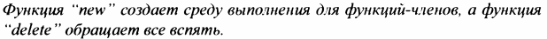

⇐16.1.1 Временная диаграмма развития С++ 16.1.3 Стандарты ISO С++⇒
Первоначально я разработал и реализовал язык, потому что хотел расnределить службы ядра UNIX no многопроцессорным и локальным сетям (которые теперь называются многоядерными и кластерными). Для этого мне нужно было точно указать части системы и то, как они взаимодействовали. Simula [15] была бы идеальной для этого, если бы не соображения nроизводительности. Мне также нужно было иметь дело непосредственно с аnnаратным обеспечением и nредоставить высокоnроизводительные механизмы nараллельного nрограммирования, для которых С был бы идеальным, если бы не его слабая nоддержка модульности и nроверки тиnов. Результат добавления классов в стиле Simula к С (классическому С; § 16.3.1) дал "С с классами", который использовался для круnных проектов, в которых его возможности для наnисания nрограмм, минимально исnользующих время и nамять, были nодвергнуты жестким исnытаниям. В нем отсутствовали nерегрузка оnераторов, ссылки, виртуальные функции, шаблоны, исключения и многие другие детали [42]. Первое использование С++ вне исследовательской организации началось в июле 1983 года.
Название "С++" было nридумано Риком Маскитrи (Rick Mascitti) летом 1983 года и выбрано мной в качестве замены названия "С с классами". Название обозначает эволюционную природу изменений от nредшественника - С, ведь"++" - это оператор инкремента в С. Немного более короткое имя "С+" является синтаксической ошибкой; кроме того, оно уже исnользовалось как название языка, не связанного с С++. Ценители семантики С считают название "С++" хуже, чем "++С". Язык не был назван "D'', потому что был расширением С, не пытался исправить проблемы, удаляя функциональные возможности, и уже существовало несколько потенциальных наследников С с именем "D". Еще одну интерпретацию имени "С++" вы найдете в приложении к [35].
С++ был разработан прежде всего для того, чтобы мне и моим друзьям не приходилось программировать на ассемблере, С или различных модных на то время языках высокого уровня. Его основная цель состояла в том, чтобы сделать написание хороших программ проще и приятнее для отдельного программиста. В первые годы не было никакого проекта С++ на бумаге; проектирование, документирование и реализация выполнялись одновременно. Не было ни "проекта С++", ни комитета по разработке С++. На протяжении всего времени С++ развивался, чтобы справляться с проблемами, с которыми сталкиваются пользователи, и в результате дискуссий между моими друзьями, моими коллегами и мной.
Первый дизайн С++ (тогда он назывался "С с классами") включал объявления функций с проверкой типов аргументов и неявными преобразованиями, классы с различием между puЫic интерфейсом и private реализацией, производные классы, а также конструкторы и деструкторы. Я использовал макросы для обеспечения примитивной параметризации [42]. Все это оказалось в неэкспериментальном использовании к середине 1980 года. В конце этого года я смог представить набор языковых средств, поддерживающих согласованный набор стилей программирования. Оглядываясь назад, я считаю наиболее важным введение конструкторов и деструкторов. В терминологии того времени [41]
Вскоре после этого "функция new" и "функция delete" были переименованы в "конструктор" и "деструктор". В этом - корень стратегий С++ по управлению ресурсами (вызвавших потребность в исключениях) и ключ ко многим технологиям, делающим код пользователя коротким и понятным. Если в то время и были другие языки, которые поддерживали несколько конструкторов, способных выполнять общий код, я их не знал (и сейчас не знаю). Деструкторы были новинкой С++.
С++ был выпущен в продажу в октябре 1985 года. К тому времени я добавил встраивание(§ 1.3, §4.2.1 ), const (§ 1.6), перегрузку функций(§ 1.3), ссылки (§1.7), перегрузку операторов (§4.2. 1) и виртуальные функции (§4.4). Из этих возможностей, безусловно, наиболее противоречивой была поддержка полиморфизма времени выполнения в форме виртуальных функций. Я знал о его ценности от Simula, но оказалось невозможным убедить в его ценности большинство людей в мире системного программирования. Системные программисты склонны рассматривать косвенные вызовы функций с подозрением, а людям, знакомым с другими языками, поддерживающими объектно-ориентированное программирование, было трудно поверить, что виртуальные функции могут быть достаточно быстрыми, чтобы быть полезными в системном коде. И наоборот, многим программистам с объектно-ориентированным опытом пришлось привыкнуть (а многие до сих пор испытывают трудности) к идее, что вы используете вызовы виртуальных функций только для выражения выбора, который должен быть сделан во время выполнения. Сопротивление виртуальным функциям может быть связано с сопротивлением идее о том, что вы можете получить лучшие системы с помощью более регулярной структуры кода, поддерживаемой языком программирования. Многие программисты на С, похоже, убеждены, что на самом деле важны полная гибкость и тщательный индивидуальный подход к каждой детали программы. Мое мнение было (и остается) таким, что нам нужна любая помощь, которую мы можем получить от языков и инструментов: внутренняя сложность систем, которые мы пытаемся построить, всегда находится на грани того, что мы можем выразить.
В ранних документах (например, в [44] и [51]) С++ описывался следующим образом:
С++ - язык программирования общего назначения, который:
Обратите внимание: не "С++ является объектно-ориентированным языком программирования". Здесь "поддерживает абстракцию данных" означает сокрытие информации, классы, не являющиеся частью иерархии классов, и обобщенное программирование. Изначально обобщенное программирование поддерживалось очень слабо, с использованием макросов [42]. Шаблоны и концепты появились намного позже.
Большая часть дизайна С++ была разработана на флипчартах в кабинетах моих коллег. В первые годы были неоценимыми отзывы Стю Фельдмана (Stu Feldman), Александра Фрейзера (Alexander Fraser), Стива Джонсона (Steve Johnson), Брайана Кернигана (Brian Kernighan), Дуга Макилроя (Doug Mcllroy) и Денниса Ритчи (Dennis Ritchie).
Во второй половине 1980-х годов я продолжал добавлять языковые возможности в ответ на комментарии пользователей. Наиболее важными из них были шаблоны [48] и обработка исключений [32], которые на момент начала разработки стандарта считались экспериментальными. При разработке шаблонов я был вынужден выбирать между гибкостью, эффективностью и ранней проверкой типов. В то время никто не знал, как одновременно получить все три свойства. Я чувствовал, что, чтобы конкурировать с кодом в стиле С для требовательных системных приложений, я должен был выбрать первые два свойства. Оглядываясь назад, я думаю, что выбор был правильным, а поиск лучшей проверки типов шаблонов продолжается [17, 24, 63, 57]. Проектирование исключений было сосредоточено на многоуровневом распространении исключений, передаче произвольной информации обработчику ошибок и интеграции исключений и управления ресурсами с использованием локальных объектов с деструкторами для представления и освобождения ресурсов. Я неуклюже назвал эту важнейшую технику Захват ресурса есть инициапизация (Resource Acquisition ls lnitialization), а другие вскоре сократили ее до аббревиатуры RAll (§4.2.2).
Я обобщил механизмы наследования С++ для поддержки нескольких базовых классов [46]. Это называлось множествеииым иаследованием и считалось трудным и противоречивым. Я считал эту возможность гораздо менее важной, чем шаблоны или исключения. Многократное наследование абстрактных классов (часто называемых интерфейсами) в настоящее время широко распространено в языках, поддерживающих статическую проверку типов и объектно-ориентированное программирование.
Язык С++ развивался рука об руку с некоторыми из ключевых библиотечных возможностей. Например, я разработал классы комплексных чисел [ 43], векторов, стеков и потоков ввода-вывода [44] вместе с механизмами перегрузки операторов. Первые классы строк и списков были разработаны Джонатаном Шопиро (Jonathan Shopiro) и мной в рамках одной и той же работы. Классы строк и списков Джонатана были первыми классами, широко используемыми как часть библиотеки. Строковый класс стандартной библиотеки С++ вырос из этих ранних попыток. Библиотека заданий, описанная в [47], была частью первой программы "С с классами", написанной в 1980 году. В ней были сопрограммы и планировщик. Я написал его и связанные с ним классы для поддержки симуляций в стиле Simu1a. К сожалению, чтобы получить стандартизированную и общедоступную поддержку параллелизма (глава 15, "Параллельные вычисления"), нам пришлось ждать до 2011 года (30 лет!). Сопрограммы, вероятно, будут частью С++20 [12]. На разработку шаблонов повлияли различные шаблоны vector, rnap, list и sort, разработанные Эндрю Кенигом (Andrew Koenig), Алексом Степановым (Alex Stepanov), мной и другими программистами.
Самым важным нововведением в стандартной библиотеке 1998 года была библиотека STL, каркас алгоритмов и контейнеров (глава 11, "Контейнеры" и 12, "Алгоритмы"). Это была работа Алекса Степанова (Alex Stepanov, с Дэйвом Массером (Dave Musser), Мэн Ли (Meng Lee) и др.), основанная на более чем десятилетней работе над обобщенным программированием. STL оказалась чрезвычайно влиятельной библиотекой как в сообществе С++, так и за его пределами.
С++ вырос в среде с множеством устоявшихся и экспериментальных языков программирования (например, Ada [27], Algol 68 [66] и ML [36]). В то время я был хорошо знаком примерно с 25 языками, и их влияние на С++ описано в [51] и [54]. Однако определяющее влияние всегда исходило от приложений, с которыми мне приходилось сталкиваться. Это была целенаправленная политика, нацеленная на то, чтобы разработка С++ была "управляемая проблемами", а не подражательная.